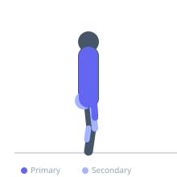
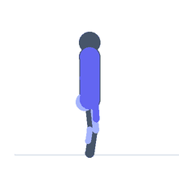

Exercise guide / Trap Bar Heavy Farmer's Carry
Trap Bar Heavy Farmer's Carry
The trap bar farmer's carry uses a hexagonal trap bar as the carrying implement, loading very heavy weights while keeping the load centred at the body's midline rather than hanging at the sides. The trap bar's neutral-grip handles and frame allow heavier loads than standard farmer's handles for most athletes, while the centred load distribution reduces spinal lateral flexion demands and allows trainees to overload the grip and trapezius safely. It is a staple in strength and conditioning programmes for developing absolute carry strength and grip endurance.
Primary muscles
trapezius upper
flexor carpi radialis
erector spinae
Secondary muscles
vastus lateralis
gluteus maximus
gastrocnemius medial
Stabilizers
transverse abdominis
internal oblique
Equipment
Trap Bar (Hex Bar)


Starting position
- The trap bar is on the floor. Step inside the frame, feet hip-width apart. Grip the high handles. Hinge at the hips to reach the handles, back flat.
Setup
- Use the high handles for most carry work — they reduce the range of motion of the initial deadlift and allow heavier loading. Ensure plates are secured with collars before walking.
Steps
- Step 1: Deadlift the trap bar from the floor: hinge, brace, stand up with hips and knees extending simultaneously.
- Step 2: Once standing, adjust posture — tall, shoulders back, core braced firmly.
- Step 3: Walk with short, quick steps. Keep the frame of the bar travelling straight — do not let it swing or sway forward.
- Step 4: Maintain upright posture throughout the walk. Keep the gaze forward.
- Step 5: At the end of the distance, reduce pace and lower the bar by hinging at the hips.
Coaching cues
- Stand tall inside the frame
- Short steps, high turnover
- Crush the handles — do not relax the grip
Breathing
- Breathe short and regularly throughout the carry. Full brace before the initial lift from the floor.
Range of motion
- Walk 20–40 metres per set at heavy loads. At moderate loads, 40–60 metres.
Tempo
- Strength: 20–30m at 1.5–2× bodyweight × 4–5 sets. Rest 2–3 minutes. Conditioning: 40m at bodyweight × 5–6 sets with 60–90 seconds rest.
Common mistakes
- Letting the bar drift forward or backward during the walk, causing the trap bar frame to contact the legs
- Overstriding, which creates instability and reduces walking speed
Safety
- Ensure collars are tight before carrying — a shifting plate inside the trap bar frame is a serious hazard
- Walk a clear, unobstructed path
Training
- strength: 1–3 reps
- endurance: 2–5 reps
- strength: 4–6 sets
- Rest: {'strength': 180, 'endurance': 90}